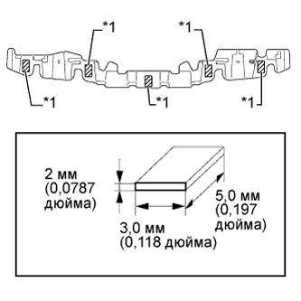
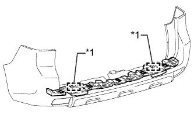

ЗАДНИЙ БАМПЕР > ПОВТОРНАЯ СБОРКА |
| Параметр / Устройство | Температура |
| Облицовка заднего бампера | 20 - 30°C (68 - 86°F) |
| 1. УСТАНОВИТЕ НАКЛАДКУ ЗАДНЕГО БАМПЕРА (для 5-дверных моделей) |
При использовании новой облицовки заднего бампера:
Очистите поверхность накладки заднего бампера.
С помощью нагревательной лампы нагрейте поверхность накладки заднего бампера.
При повторном использовании облицовки заднего бампера:
С помощью нагревательной лампы нагрейте поверхность накладки заднего бампера.
Снимите двухстороннюю клейкую ленту с накладки заднего бампера.
Удалите остатки клейкой ленты чистящим средством.
Установите новую прокладку нового бампера.
Снимите отслаивающуюся бумагу с поверхности новой прокладки заднего бампера.
Совместите накладку заднего бампера с разделительной линией, нанесенной на заднем бампере.
Установите 4 накладки заднего бампера.
| 2. УСТАНОВИТЕ НАКЛАДКУ ЗАДНЕГО БАМПЕРА (для 3-дверных моделей) |
При использовании новой облицовки заднего бампера:
Очистите поверхность накладки заднего бампера.
С помощью нагревательной лампы нагрейте поверхность накладки заднего бампера.
При повторном использовании облицовки заднего бампера:
С помощью нагревательной лампы нагрейте поверхность накладки заднего бампера.
Снимите двухстороннюю клейкую ленту с накладки заднего бампера.
Удалите остатки клейкой ленты чистящим средством.
Установите новую прокладку нового бампера.
Снимите отслаивающуюся бумагу с поверхности новой прокладки заднего бампера.
Совместите накладку заднего бампера с разделительной линией, нанесенной на заднем бампере.
Установите 2 накладки заднего бампера.
| 3. УСТАНОВИТЕ ПРАВЫЙ УДЛИНИТЕЛЬ ЗАДНЕГО БАМПЕРА |
Введите в зацепление захват, чтобы установить удлинитель заднего бампера.
Заверните винт.
| 4. УСТАНОВИТЕ ЛЕВЫЙ УГОЛКОВЫЙ ОТРАЖАТЕЛЬ (для моделей без задних противотуманных фонарей) |
Введите в зацепление 2 захвата, чтобы закрепить уголковый отражатель.
Заверните винт.
| 5. УСТАНОВИТЕ ПРАВЫЙ УГОЛКОВЫЙ ОТРАЖАТЕЛЬ (для моделей без задних противотуманных фонарей) |
| 6. УСТАНОВИТЕ ЛЕВЫЙ ЗАДНИЙ ПРОТИВОТУМАННЫЙ ФОНАРЬ В СБОРЕ (для моделей с задними противотуманными фонарями) |
Установите лампу и введите в зацепление зажим и 2 захвата.
Заверните винт.
| 7. УСТАНОВИТЕ ПРАВЫЙ ЗАДНИЙ ПРОТИВОТУМАННЫЙ ФОНАРЬ В СБОРЕ (для моделей с задними противотуманными фонарями) |
| 8. УСТАНОВИТЕ ЛЕВУЮ ЗАЩИТУ ЗАДНЕГО БАМПЕРА |
Установите защиту заднего бампера и закрепите ее винтом.
| 9. УСТАНОВИТЕ ПРАВУЮ ЗАЩИТУ ЗАДНЕГО БАМПЕРА |
| 10. УСТАНОВИТЕ ДЕРЖАТЕЛЬ УЛЬТРАЗВУКОВОГО ДАТЧИКА № 2 (для моделей с сенсорной системой помощи при парковке TOYOTA) |
 |
Совместите шпоночный паз и выступ, как показано на рисунке.
Установите держатель ультразвукового датчика на облицовку переднего бампера.
| *1 | Отверстие под ключ |
| 11. УСТАНОВИТЕ УЛЬТРАЗВУКОВОЙ ДАТЧИК № 1 (для моделей с сенсорной системой помощи при парковке TOYOTA) |
Введите в зацепление 2 захвата, чтобы установить ультразвуковой датчик № 1.
Подсоедините разъем.
| 12. УСТАНОВИТЕ ФИКСАТОР УЛЬТРАЗВУКОВОГО ДАТЧИКА (для моделей с сенсорной системой помощи при парковке TOYOTA) |
Введите в зацепление 4 захвата, чтобы закрепить фиксатор ультразвукового датчика.
| 13. УСТАНОВИТЕ НАПОЛЬНЫЙ ПРОВОД № 5 (для моделей с сенсорной системой помощи при парковке TOYOTA, с задними противотуманными фонарями) |
Введите в зацепление 5 зажимов, чтобы установить напольный провод № 5.
Подсоедините 3 разъема.
| 14. УСТАНОВИТЕ НАПОЛЬНЫЙ ПРОВОД № 5 (для моделей с сенсорной системой помощи при парковке TOYOTA, без задних противотуманных фонарей) |
Введите в зацепление 5 зажимов, чтобы установить напольный провод № 5.
Подсоедините 2 разъема.
| 15. УСТАНОВИТЕ НАПОЛЬНЫЙ ПРОВОД № 5 (для моделей без сенсорной системы помощи при парковке TOYOTA, с задними противотуманными фонарями) |
Введите в зацепление 2 зажимов, чтобы установить напольный провод № 5.
Подсоедините разъем.
| 16. УСТАНОВИТЕ НАПОЛЬНЫЙ ПРОВОД № 4 (для моделей с сенсорной системой помощи при парковке TOYOTA, с задними противотуманными фонарями) |
| 17. УСТАНОВИТЕ НАПОЛЬНЫЙ ПРОВОД № 4 (для моделей с сенсорной системой помощи при парковке TOYOTA, без задних противотуманных фонарей) |
| 18. УСТАНОВИТЕ НАПОЛЬНЫЙ ПРОВОД № 4 (для моделей без сенсорной системы помощи при парковке TOYOTA, с задними противотуманными фонарями) |
| 19. УСТАНОВИТЕ ЗАДНИЙ ПОГЛОТИТЕЛЬ ЭНЕРГИИ УДАРА |
При использовании новой облицовки заднего бампера:
Очистите поверхность накладки заднего бампера.
С помощью нагревательной лампы нагрейте поверхность накладки заднего бампера.
При повторном использовании облицовки заднего бампера:
С помощью нагревательной лампы нагрейте поверхность накладки заднего бампера.
Снимите двухстороннюю клейкую ленту с накладки заднего бампера.
Удалите остатки клейкой ленты чистящим средством.
При повторном использовании заднего поглотителя энергии удара:
Снимите двухстороннюю клейкую ленту с накладки заднего бампера.
Удалите остатки клейкой ленты чистящим средством.
|  |
Наклейте двухстороннюю клейкую ленту, как показано на рисунке.
Установите задний поглотитель энергии удара.
Снимите с поверхности заднего поглотителя энергии удара отслаивающуюся бумагу.
|  |
Совместите направляющую и установите задний поглотитель энергии удара на облицовку заднего бампера, как показано на рисунке.
| *1 | Направляющая |